|
|

|

|
|
|
|
|
| Apache | Web Services | Axis |
Axis Architecture Guide
1.2 Version
Table of Contents
IntroductionThis guide records some of the rationale of the architecture and design of Axis. Architectural OverviewAxis consists of several subsystems working together, as we shall see later. In this section we'll give you an overview of how the core of Axis works. Handlers and the Message Path in AxisPut simply, Axis is all about processing Messages. When the central Axis processing logic runs, a series of Handlers are each invoked in order. The particular order is determined by two factors - deployment configuration and whether the engine is a client or a server. The object which is passed to each Handler invocation is a MessageContext. A MessageContext is a structure which contains several important parts: 1) a "request" message, 2) a "response" message, and 3) a bag of properties. More on this in a bit. There are two basic ways in which Axis is invoked:
In either case, the Axis framework's job is simply to pass the resulting MessageContext through the configured set of Handlers, each of which has an opportunity to do whatever it is designed to do with the MessageContext. Message Path on the ServerThe server side message path is shown in the following diagram. The small cylinders represent Handlers and the larger, enclosing cylinders represent Chains (ordered collections of Handlers which will be described shortly). 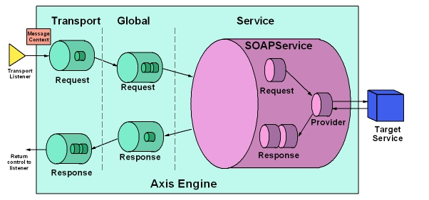 A message arrives (in some protocol-specific manner) at a Transport Listener. In this case, let's assume the Listener is a HTTP servlet. It's the Listener's job to package the protocol-specific data into a Message object (org.apache.axis.Message), and put the Message into a MessageContext. The MessageContext is also loaded with various properties by the Listener - in this example the property "http.SOAPAction" would be set to the value of the SOAPAction HTTP header. The Transport Listener also sets the transportName String on the MessageContext , in this case to "http". Once the MessageContext is ready to go, the Listener hands it to the AxisEngine. The AxisEngine's first job is to look up the transport by name. The transport is an object which contains a request Chain, a response Chain, or perhaps both. A Chain is a Handler consisting of a sequence of Handlers which are invoked in turn -- more on Chains later. If a transport request Chain exists, it will be invoked, passing the MessageContext into the invoke() method. This will result in calling all the Handlers specified in the request Chain configuration. After the transport request Handler, the engine locates a global request Chain, if configured, and then invokes any Handlers specified therein. At some point during the processing up until now, some Handler has hopefully set the serviceHandler field of the MessageContext (this is usually done in the HTTP transport by the "URLMapper" Handler, which maps a URL like "http://localhost/axis/services/AdminService" to the "AdminService" service). This field determines the Handler we'll invoke to execute service-specific functionality, such as making an RPC call on a back-end object. Services in Axis are typically instances of the "SOAPService" class (org.apache.axis.handlers.soap.SOAPService), which may contain request and response Chains (similar to what we saw at the transport and global levels), and must contain a provider, which is simply a Handler responsible for implementing the actual back end logic of the service. For RPC-style requests, the provider is the org.apache.axis.providers.java.RPCProvider class. This is just another Handler that, when invoked, attempts to call a backend Java object whose class is determined by the "className" parameter specified at deployment time. It uses the SOAP RPC convention for determining the method to call, and makes sure the types of the incoming XML-encoded arguments match the types of the required parameters of the resulting method. Message Path on the ClientThe Message Path on the client side is similar to that on the server side, except the order of scoping is reversed, as shown below. 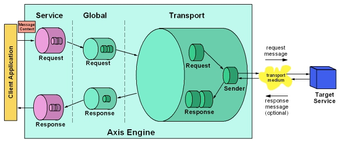 The service Handler, if any, is called first - on the client side, there is no "provider" since the service is being provided by a remote node, but there is still the possibility of request and response Chains. The service request and response Chains perform any service-specific processing of the request message on its way out of the system, and also of the response message on its way back to the caller. After the service request Chain, the global request Chain, if any, is invoked, followed by the transport. The Transport Sender, a special Handler whose job it is to actually perform whatever protocol-specific operations are necessary to get the message to and from the target SOAP server, is invoked to send the message. The response (if any) is placed into the responseMessage field of the MessageContext, and the MessageContext then propagates through the response Chains - first the transport, then the global, and finally the service. SubsystemsAxis comprises several subsystems working together with the aim of separating responsibilities cleanly and making Axis modular. Subsystems which are properly layered enable parts of a system to be used without having to use the whole of it (or hack the code). The following diagram shows the layering of subsystems. The lower layers are independent of the higher layers. The 'stacked' boxes represent mutually independent, although not necessary mutually exclusive, alternatives. For example, the HTTP, SMTP, and JMS transports are independent of each other but may be used together. 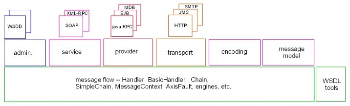 In fact, the Axis source code is not as cleanly separated into subsystems as the above diagram might imply. Some subsystems are spread over several packages and some packages overlap more than one subsystem. Proposals to improve the code structure and make it conform more accurately to the notional Axis subsystems will be considered when we get a chance. Message Flow SubsystemHandlers and ChainsHandlers are invoked in sequence to process messages. At some point in the sequence a Handler may send a request and receive a response or else process a request and produce a response. Such a Handler is known as the pivot point of the sequence. As described above, Handlers are either transport-specific, service-specific, or global. The Handlers of each of these three different kinds are combined together into Chains. So the overall sequence of Handlers comprises three Chains: transport, global, and service. The following diagram shows two sequences of handlers: the client-side sequence on the left and the server-side sequence on the right. 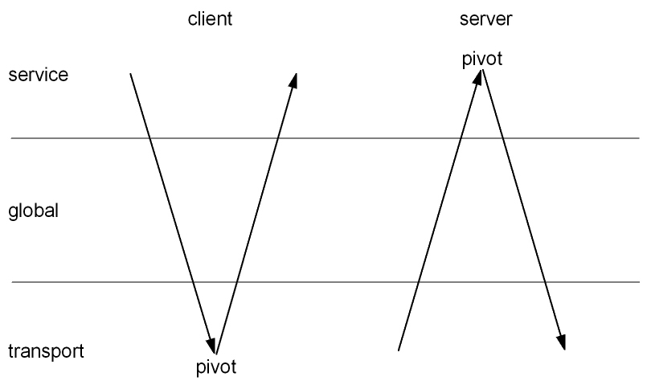 A web service does not necessarily send a response message to each request message, although many do. However, response Handlers are still useful in the message path even when there isn't a response message, e.g. to stop timers, clean up resources, etc. A Chain is a composite Handler, i.e. it aggregates a collection of Handlers as well as implementing the Handler interface as shown in the following UML diagram: 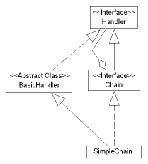 A Chain also has similarities to the Chain of Responsibility design pattern in which a request flows along a sequence of Handlers until it is processed. Although an Axis Chain may process a request in stages over a succession of Handlers, it has the same advantages as Chain of Responsibility: flexibility and the ease with which new function can be added. Back to message processing -- a message is processed by passing through the appropriate Chains. A message context is used to pass the message and associated environment through the sequence of Handlers. The model is that Axis Chains are constructed offline by having Handlers added to them one at a time. Then they are turned online and message contexts start to flow through the Chains. Multiple message contexts may flow through a single Chain concurrently. Handlers are never added to a Chain once it goes online. If a Handler needs to be added or removed, the Chain must be 'cloned', the modifications made to the clone, and then the clone made online and the old Chain retired when it is no longer in use. Message contexts that were using the old Chain continue to use it until they are finished. This means that Chains do not need to cope with the addition and removal of Handlers while the Chains are processing message contexts -- an important simplification. The deployment registry has factories for Handlers and Chains. Handlers and Chains can be defined to have 'per-access', 'per-request', or 'singleton' scope although the registry currently only distinguishes between these by constructing non-singleton scope objects when requested and constructing singleton scope objects once and holding on to them for use on subsequent creation requests. Targeted ChainsA Targeted Chain is a special kind of chain which may have any or all of: a request Handler, a pivot Handler, and a response Handler. The following class diagram shows how Targeted Chains relate to Chains. Note that a Targeted Chain is an aggregation of Handlers by virtue of extending the Chain interface which is an aggregation of Handlers. 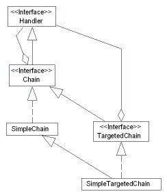 A service is a special kind of Targeted Chain in which the pivot Handler is known as a "provider". Fault ProcessingNow let's consider what happens when a fault occurs. The Handlers prior to the Handler that raised the fault are driven, in reverse order, for onFault (previously misnamed 'undo'). The scope of this backwards scan is interesting: all Handlers previously invoked for the current Message Context are driven. Need to explain how "FaultableHandlers" and "WSDD Fault Flows" fit in. Message ContextsThe current structure of a MessageContext is shown below. Each message context may be associated with a request Message and/or a response Message. Each Message has a SOAPPart and an Attachments object, both of which implement the Part interface. 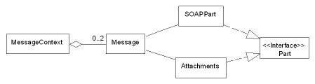 The typing of Message Contexts needs to be carefully considered in relation to the Axis architecture. Since a Message Context appears on the Handler interface, it should not be tied to or biassed in favour of SOAP. The current implementation is marginally biassed towards SOAP in that the setServiceHandler method narrows the specified Handler to a SOAPService. EngineAxis has an abstract AxisEngine class with two concrete subclasses: AxisClient drives the client side handler chains and AxisServer drives the server side handler chains. The relationships between these classes is fairly simple:
Engine ConfigurationThe EngineConfiguration interface is the means of configuring the Handler factories and global options of an engine instance. An instance of a concrete implementation of EngineConfiguration must be passed to the engine when it is created and the engine must be notified if the EngineConfiguration contents are modified. The engine keeps a reference to the EngineConfiguration and then uses it to obtain Handler factories and global options. The EngineConfiguration interface belongs to the Message Flow subsystem which means that the Message Flow subsystem does not depend on the Administration subsystem. Administration SubsystemThe Administration subsystem provides a way of configuring Axis engines. The configuration information an engine needs is a collection of factories for runtime artefacts such as Chains and SOAPServices and a set of global configuration options for the engine. The Message Flow subsystem's EngineConfiguration interface is implemented by the Administration subsystem. FileProvider enables an engine to be configured statically from a file containing a deployment descriptor which is understood by the WSDDDeployment class. SimpleProvider, on the other hand, enables an engine to be configured dynamically. 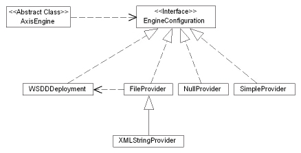 WSDD-Based AdministrationWSDD is an XML grammer for deployment descriptors which are used to statically configure Axis engines. Each Handler needs configuration in terms of the concrete class name of a factory for the Handler, a set of options for the handler, and a lifecycle scope value which determines the scope of sharing of instances of the Handler. The structure of the WSDD grammar is mirrored by a class hierarchy of factories for runtime artefacts. The following diagram shows the classes and the types of runtime artefacts they produce (a dotted arrow means "instantiates"). 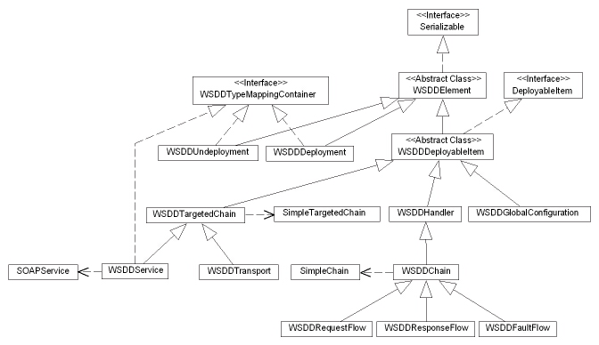 Message Model SubsystemSOAP Message ModelThe XML syntax of a SOAP message is fairly simple. A SOAP message consists of an envelope containing:
The only body entry defined by SOAP is a SOAP fault which is used for reporting errors. Some of the XML elements of a SOAP message define namespaces, each in terms of a URI and a local name, and encoding styles, a standard one of which is defined by SOAP. Header entries may be tagged with the following optional SOAP attributes:
So the SOAP message model looks like this: 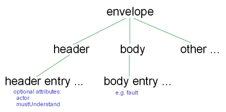 Message ElementsThe classes which represent SOAP messages form a class hierarchy based on the MessageElement class which takes care of namespaces and encodings. The SOAPHeaderElement class looks after the actor and mustUnderstand attributes. 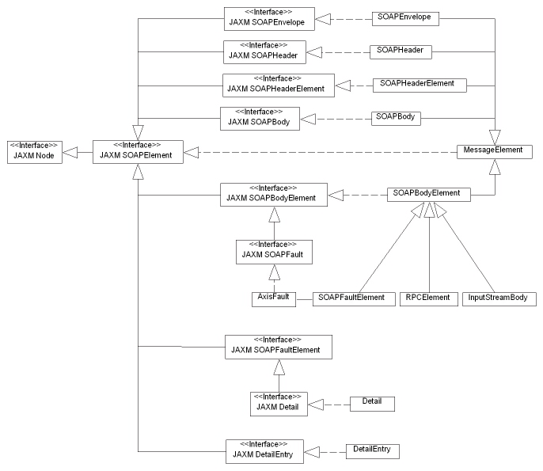 During deserialization, a parse tree is constructed consisting of instances of the above classes in parent-child relationships as shown below. 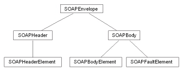 DeserializationThe class mainly responsible for XML parsing, i.e. deserialization, is DeserializationContext ('DC'). DC manages the construction of the parse tree and maintains a stack of SAX handlers, a reference to the MessageElement that is currently being deserialized, a stack of namespace mappings, a mapping from IDs to elements, a set of type mappings for deserialization (see Encoding Subsystem) and a SAX event recorder. Elements that we scan over, or ones for which we don't have a particular deserializer, are recorded - in other words, the SAX events are placed into a queue which may be 'played back' at a later time to any SAX ContentHandler. Once a SOAPEnvelope has been built, either through a parse or manual construction by the user, it may be output using a SerializationContext (also see Encoding Subsystem). MessageElements all have an output() method which lets them write out their contents. The SAX handlers form a class hierarchy: 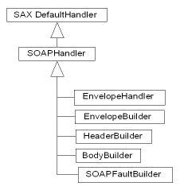 and stack up as shown in the following diagram: 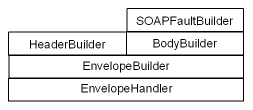 Initially, the SAX handler stack just contains an instance of EnvelopeHandler which represents the fact that parsing of the SOAP envelope has not yet started. The EnvelopeHandler is constructed with a reference to an EnvelopeBuilder, which is the SAX handler responsible for parsing the SOAP envelope. During parsing, DC receives the events from the SAX parser and notifies either the SAX handler on the top of its handler stack, the SAX event recorder, or both. On the start of an element, DC calls the SAX handler on the top of its handler stack for onStartChild. This method returns a SAX handler to be used to parse the child, which DC pushes on its SAX handler stack and calls for startElement. startElement, amongst other things, typically creates a new MessageElement of the appropriate class and calls DC for pushNewElement. The latter action creates the parent-child relationships of the parse tree. On the end of an element, DC pops the top SAX handler from its handler stack and calls it for endElement. It then drives SAX handler which is now on the top of the handler stack for onEndChild. Finally, it sets the MessageElement that is currently being deserialized to the parent of the current one. Elements which are not defined by SOAP are treated using a SOAPHandler as a SAX event handler and a MessageElement as a node in the parse tree. Encoding SubsystemEncoding is most easily understood from the bottom up. The basic requirement is to transform between values of programming language datatypes and their XML representations. In Axis, this means encoding (or 'serializing') Java objects and primitives into XML and decoding (or 'deserializing') XML into Java objects and primitives. The basic classes that implement these steps are serializers and deserializers. 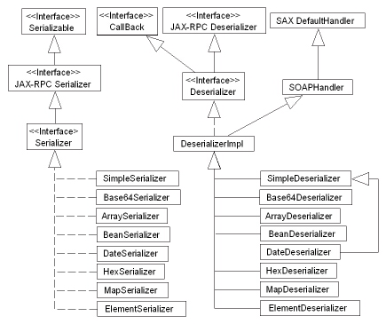 Particular serializers and deserializers are written to support a specific XML processing mechanism such as DOM or SAX. So serializer factories and deserializer factories are introduced to construct serializers and deserializers for a XML processing mechanism which is specified as a parameter.
As is apparent from the above class diagrams, each pair of Java type and XML data type which needs encoding and decoding requires specific serializers and deserializers (actually one of each per XML processing mechanism). So we need to maintain a mapping from a pair of Java type and XML data type, identified by a QName, to a serializer factory and a deserializer factory. Such a mapping is known as a type mapping. The type mapping class hierarchy is shown below. Notice how the default type mapping instantiates the various serializer and deserialiser factories.
There is one final level of indirection. How do we know which type mapping to use for a particular message? This is determined by the encoding which is specified in the message. A type mapping registry maintains a map from encoding name (URI) to type mapping. Note that the XML data type QNames are defined by the encoding.
So, in summary, to encode a Java object or primitive data value to a XML datatype or to decode the latter to the former, we need to know:
WSDL Tools SubsystemThe WSDL Tools subsystem contains WSDL2Java and Java2WSDL. The Axis runtime does not depend on these tools -- they are just there to make life easier for the user. WSDL2JavaThis tool takes a description of a web service written in WSDL and emits Java artefacts used to access the web service. There are three layers inside the tool:
Java2WSDLtbd. Interaction DiagramsClient Side ProcessingThe client side Axis processing constructs a Call object with associated Service, MessageContext, and request Message as shown below before invoking the AxisClient engine.
An instance of Service and its related AxisClient instance are created before the Call object. The Call object is then created by invoking the Service.createCall factory method. Call.setOperation creates a Transport instance, if a suitable one is not already associated with the Call instance. Then Call.invoke creates a MessageContext and associated request Message, drives AxisClient.invoke, and processes the resultant MessageContext. This significant method calls in this sequence are shown in the following interaction diagram. 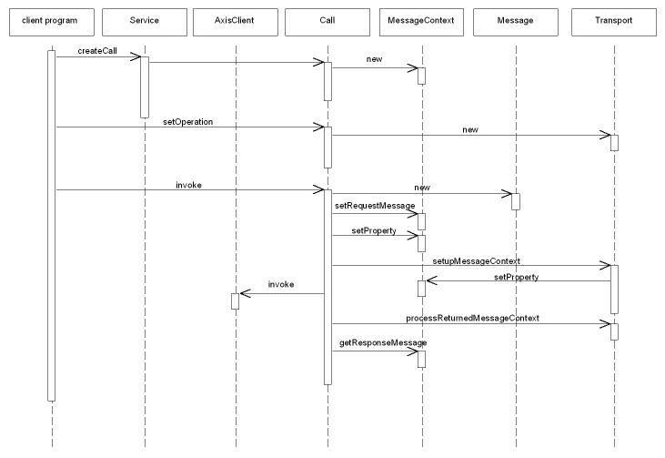 Pluggable-Component DiscoveryWhile most pluggable components infrastructures (jaxp/xerces, commons-logging, etc) provide discovery features, it is foreseen that there are situations where these may evolve over time. For example, as leading-edge technologies are reworked and adopted as standards, discovery mechanisms are likely to change. Therefore, component discovery must be relegated to a single point of control within AXIS, typically an AXIS-specific factory method. These factory methods should conform to current standards, when available. As technologies evolve and/or are standardized, the factory methods should be kept up-to-date with appropriate discovery mechanisms. Open Issues
|